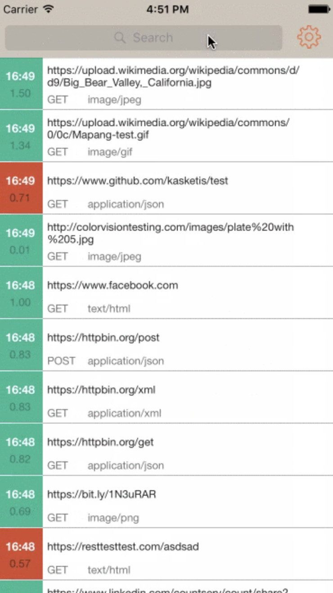

Netfox ile iOS uygulamalarda network izlemek
Uğurcan Durak yazdı.

{kind=link}
Merhabalar, bu yazıda mobil cihazda network isteklerini detaylı şekilde görüntülemek için kullanılan faydalı olduğunu düşündüğüm Netfox kütüphanesinden bahsedicem.
Çok detaya girmeden genel hatlarıyla nedir? nasıl kullanılır? gibi başlıklarla değineceğim. Hadi başlayalım :)
Netfox Nedir?
Netfox kütüphanesi, tüm network işlemlerini mobil cihaz üzerinden detaylı bir şekilde görüntüleyebileceğimiz open source bir kütüphanedir.
Netfox'u uygulama içerisinde istediğimiz bir anda başlatıp anlık olarak uygulamamızın yapmış olduğu tüm istekleri listeleyebilir ve detaylı bir şekilde body, header, response gibi tüm network etkileşimlerini inceleyebiliriz.
Bu tarz kütüphanelerin en güzel yanı, mobil cihazımız bilgisayara bağlı olmadan da istediğimiz bir anda network log'larına bakabilmektir. Bu özellik testçiler için oldukça faydalıdır. Çünkü herhangi bir hata anında doğrudan developer'a bildirmek yerine log'ları inceleyip hata hakkında fikir sahibi olabilirler.
Netfox Nasıl Kullanılır?
Netfox'un kullanımı ve projeye entegre edilmesi oldukça basittir.
Varsayılan davranışı shake olarak belirlenmiş olsada custom bir şekilde istediğimiz bir butona ya da bir view event'ine atayarak Netfox'u başlatabiliriz. Öncelikle projeye nasıl eklenir ona bakalım.
Netfox'un Projeye Eklenmesi
- Netfox kütüphanesini SPM, CocoaPods ve Carthage olmak üzere üç ayrı yöntem ile projemize ekleyebiliriz. Bu yöntemlerden herhangi biriyle eklediğinizi varsayarak bir sonraki adıma geçiyorum.
- Kütüphaneyi projeye ekledik şimdi ise
initiliazeedeceğiz. Bunun için AppDelegate class'ına gidip aşağıdaki gibi gerekli kodları ekliyoruz.
Netfox Import:
#if DEBUG import netfox #endif
Burada #if DEBUG ve #endif kodlarını ekleyerek kodun sadece debug moddayken import olmasını sağlıyoruz. Daha sonra uygulama ilk başlatıldığında hazır hale gelmesini istediğim için aşağıdaki gibi başlatıcı fonksiyonun içerisine kodlarımızı ekliyoruz.
Netfox başlatma:
func application(
_ application: UIApplication,
didFinishLaunchingWithOptions launchOptions: [UIApplication.LaunchOptionsKey: Any]?
) -> Bool {
#if DEBUG
NFX.sharedInstance().start()
NFX.sharedInstance().setGesture(.shake)
#endif
}
Burada start() methodunu çağırarak Netfox'ı initiliaze ediyoruz ardından setGesture() ile Netfox'ın nasıl açılacağını belirliyoruz.
Varsayılan davranışı shake olduğundan özellikle belirtmenize gerek yok örnek olması açısından ekledim. Siz dilerseniz custom parametresini geçip daha sonra dilediğiniz yerde show() methodu ile açılmasını sağlayabilirsiniz.
Netfox Özetle
Evet hepsi bu kadar :) Şimdi dilediğiniz gibi cihazı sallayarak ya da atamış olduğunuz bir buton ile Netfox'ı başlatabilir ve log'ları inceleyebilirsiniz.
Daha detaylı incelemek isteyenler için aşağıya link bırakıyorum. Umarım faydalı olur zaman ayırdığınız için teşekkürler.